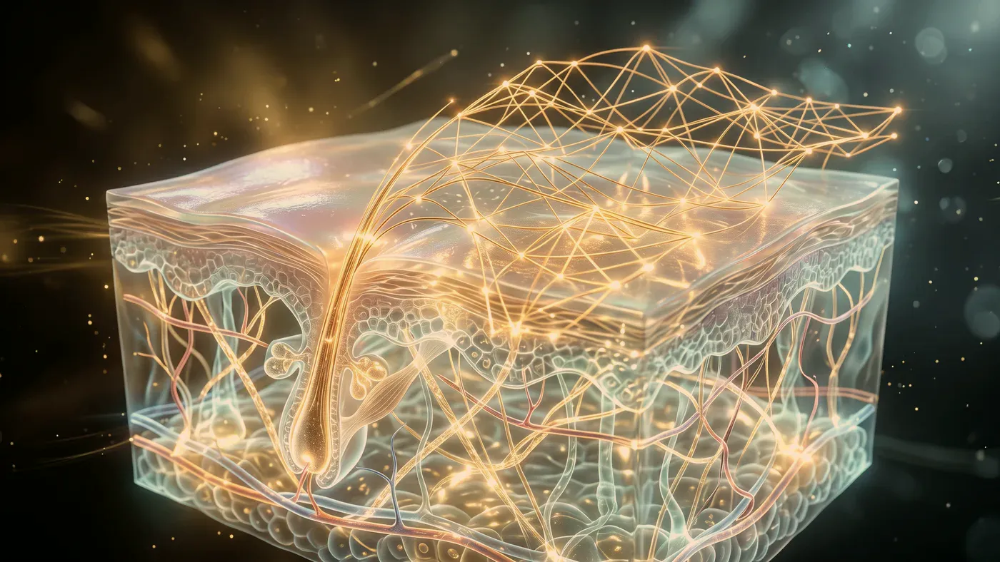
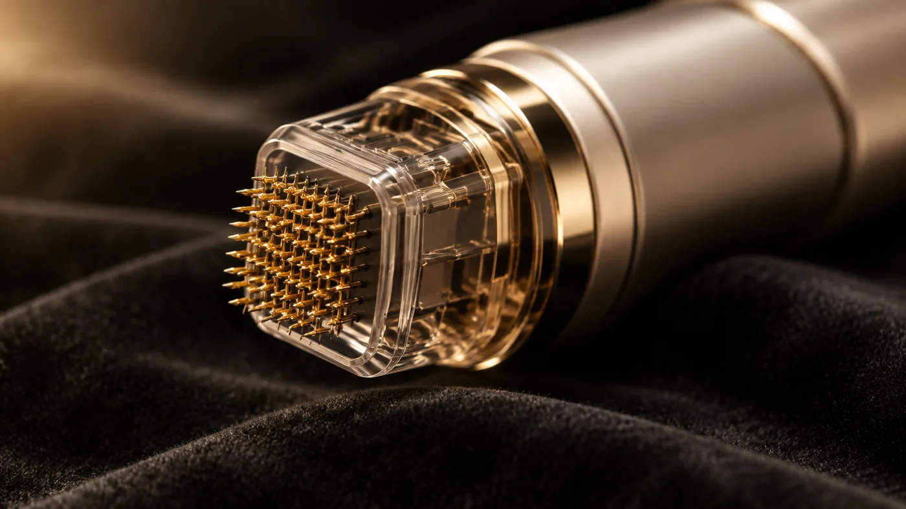

Cihaz ve Lazer · Akne İzi ve Doku
Altın iğne radyofrekans: ısıyı derinin içinde üreten mikroiğne.
Radyofrekans enerjisi burada deri yüzeyine değil, deriye giren çok ince iğnelerin uçlarına taşınır. Isı, iğne ucunun durduğu yerde oluşur; üst katman büyük ölçüde sağlam kalırken derinde bir onarım süreci tetiklenir. En çok akne izi, belirgin gözenek ve pürüzlü doku için gündeme gelir.

Görsel yapay zekâ ile üretilmiştirTanım ve sınırlar
Radyofrekans mikroiğne deriye ne yapar, neyi yapamaz?
İki kişinin akne izi aynaya aynı yansısa bile izin biçimi, derinliği ve altındaki bağ dokusu çekintileri farklı olabilir. Bu yüzden önce izin türü adlandırılır, yöntem ondan sonra seçilir. Konuya genel bakış için önce akne ve akne izi ya da gözenek ve cilt dokusu sayfasını okumanız yararlı olur.
İnce iğneler seçilen derinliğe kadar ilerler ve radyofrekans akımı uçlardan dokuya geçer. Doku akıma direnç gösterdiği için enerji ısıya dönüşür; her ucun çevresinde küçük bir ısı odağı oluşur.
Böylece tek seansta iki uyarı birlikte verilir: iğnenin açtığı mikro kanalın mekanik etkisi ve ısının tetiklediği onarım. Gövdesi yalıtılmış uçlarda akım yalnızca iğnenin ucundan çıkar ve yüzey daha az ısınır; koyu tenlerde ton değişikliği riskini azaltmak için bu ayrıntı önemlidir.
Derinlik, milimetrenin altından birkaç milimetreye kadar bölgeye göre ayarlanır. Adındaki “altın”, bazı uçlarda iğnelerin ince bir altın tabakasıyla kaplanmasına işaret eder; bu kaplama metal duyarlılığını azaltmak içindir, etkiyi güçlendirdiği anlamına gelmez.
Kullanılan cihaz: RF mikroiğne (Allura VI++).
Akne izlerini silen bir işlem değildir. Seanslar sonunda umulan, çukurların kenarındaki keskin geçişin azalması ve yan ışıkta gölgelerin hafiflemesidir; değişimin derecesi izin türüne bağlıdır. Buz kıracağı ucu gibi dar ve derin izler bu yöntemle tek başına yeterince yanıt vermez, önce ayrı bir hazırlık gerekebilir. Kabarık izler ve keloid ise hedef dışıdır; ısı bu izleri daha belirgin hâle getirebilir.
Sivilceler aktifken iz dönemine geçilmez; önce akne hekim planıyla yatıştırılır. Yüzeyi mikro alanlarda açan fraksiyonel lazerden farkı, enerjinin deri yüzeyinden değil iğne ucundan verilmesidir; yüzey daha az etkilendiği için koyu tenlerde tercih nedeni olabilir, buna karşılık derin ayarlarda iyileşme uzar.
Planlama
Ayar neye göre seçilir, uygulamaya ne engel olur?
Alında deri ince, yanakta ve çene hattında daha kalındır; ayar bu farka göre bölge bölge değiştirilir. Daha derine inmek daha güçlü bir uyarı demektir, ama iyileşme de o ölçüde uzar.
Dizinin uzunluğu
İzler için planlanan dizi çoğunlukla üç–altı seanstır; ilk iki seanstaki tepki, dizinin kısalıp uzayacağını gösterir.
Çubuklar göreli simgedir; size özel plan muayenede kurulur.
- İzlerin tek tek haritalanması, gerçekçi beklentinin konuşulması
- Cilt hassas ya da lekeliyse birkaç haftalık ön bakım
- Onam formunun birlikte okunup imzalanması
- Uyuşturucu krem etkisini gösterince tek kullanımlık steril uçla çalışma
- Soğuk uygulama, bakım notu ve dördüncü haftada kontrol
Vücudunuzda elektrikle çalışan bir cihaz, örneğin kalp pili, şok cihazı ya da benzeri bir implant varsa radyofrekans akımı kullanılmaz. Bölgede metal plaka, vida, kalıcı dolgu maddesi veya başka bir yapay malzeme varsa muayenede mutlaka söyleyin.
Yüzde iltihaplı sivilce, uçuk, alevlenmiş egzama, güneş yanığı ya da açık yara varken iğne ve ısı iyileşmeyi bozabileceği için önce deri toparlanır. Akne için isotretinoin kullandıysanız bırakma tarihinizi söyleyin; ne kadar bekleneceğine hekim karar verir.
Kabarık iz ya da keloid yapma eğilimi, vitiligo gibi renk kaybıyla giden tablolar, gebelik, şekeri düzensiz seyreden diyabet, bağışıklığı baskılayan ilaçlar, kanama eğilimi ve kan sulandırıcı kullanımı planı değiştirir. Altın, nikel gibi metallere, uyuşturucu kremlere ya da ilaçlara karşı bilinen duyarlılığınızı işlemden önce bildirin.

Görsel yapay zekâ ile üretilmiştir"İzin adını koymadan yöntem seçmiyoruz."
İlk iki gün cilde yalnızca yumuşak bir temizleyici, nemlendirici ve güneş koruyucu sürülür; asit ve retinoid içeren ürünlere birkaç gün ara verilir, makyaj çoğunlukla ikinci günden sonra yapılabilir. Yüzdeki pembelik genellikle üçüncü güne kadar solar; ilk gece hafif şişlik olabilir ve iğne noktalarında ince kabuklar görülebilir. Değişim çoğu kişide ikinci seanstan sonra fark edilmeye başlar ve dizi bittikten sonra üç aya kadar sürebilir. Sonuçlar kişiden kişiye değişir.
İzlerinize birlikte bakalım
Yöntem, izlerin biçimi ve derinliği görüldükten sonra seçilir.
Randevu talebiBirkaç gün içinde yatışması beklenen bulgular tersine artıyorsa, yani kızarıklık yayılıyor, ağrı şiddetleniyor, akıntı, ateş, kabarcık ya da uzayan şişlik görülüyorsa kendiliğinden geçmesini beklemeyin. 0539 933 08 08 numarasından bize ulaşın; telefonla ulaşamıyorsanız en yakın acil servise gidin. Kontrol ve izlem düzenini uygulama sonrası takip sayfasında bulabilirsiniz.
Sorgulayın
Sorunuzu seçin, cevap ekrana düşsün
Sonraki adım
İzlerinizin türünü birlikte adlandıralım
Hangi yöntemin işe yarayacağı, izlerinizin biçimine, derinliğine ve cilt tonunuza göre değişir.
Bu içerik Uzm. Dr. Rahmi Cebeci (Aile Hekimliği Uzmanı · Medikal Estetik Sertifikalı) tarafından hazırlanmış ve tıbbi doğruluk yönünden denetlenmiştir.
Bu sayfadaki bilgiler genel bilgilendirme amaçlıdır; tanı veya tedavi önerisi niteliği taşımaz ve hekim muayenesinin yerine geçmez. Sonuçlar kişiden kişiye değişiklik gösterebilir.